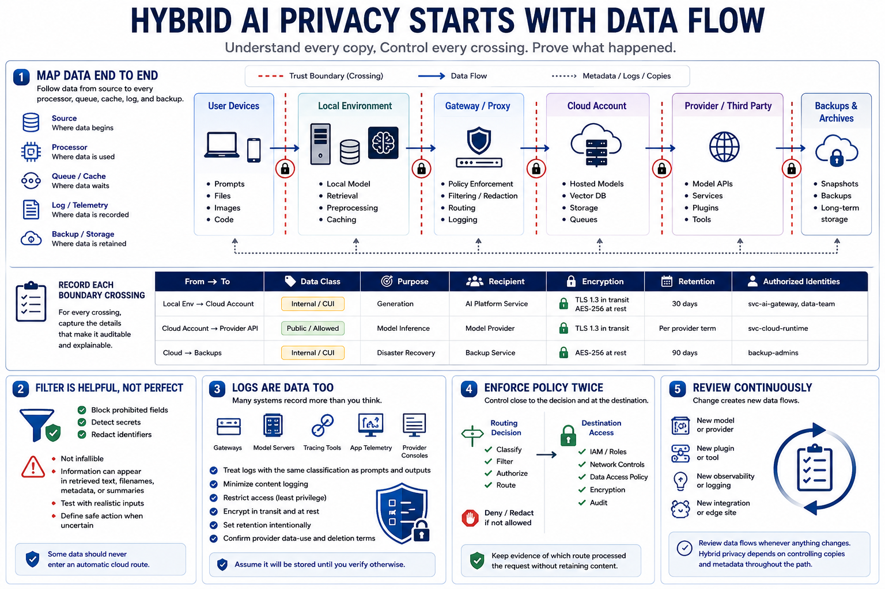

Data Flow and Privacy Boundaries
Connecting to LMS... Progress: in progress

Narration
Map data from its source to every processor, queue, cache, log, and backup. Label trust boundaries where information moves between user devices, local servers, gateways, cloud accounts, providers, and third-party APIs. For each crossing, record the data class, purpose, recipient, encryption, retention, and authorized identities. A diagram is valuable only when it reflects runtime behavior.
Prompt filtering can block prohibited fields, detect secrets, or redact identifiers before external use, but it is not infallible. Documents may reveal sensitive information through retrieved passages, filenames, embedded metadata, or summaries. Test filters against realistic inputs and define a safe action when classification is uncertain. Some data should never enter an automatic cloud route.
Logs deserve the same classification as prompts and outputs. Gateways, model servers, tracing tools, application telemetry, and provider consoles may record content, tokens, account identifiers, errors, and tool calls. Minimize content logging, restrict access, encrypt transport and storage, and set retention intentionally. Confirm provider data-use and deletion terms rather than assuming an API request disappears after the response.
Enforce policy close to the routing decision and again at destination access controls. Maintain evidence of which route processed a request without retaining unnecessary content. Review data flows when a model, provider, plugin, or observability tool changes. Hybrid privacy depends on controlling copies and metadata throughout the path, not merely keeping the original document local.